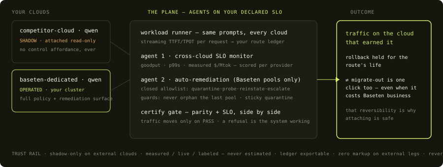

One console,
two data planes
The operate console for a latency-critical workload (a voice agent — the first syllable must land within 500ms, every time). The same console runs in two modes: a hosted demo workspace anyone can drive safely, and a live mode that operates real Baseten clusters when the repo's bridge runs beside it. We ran the live mode ourselves — §6 is what it measured.
Agents continuously score the benchmarks you declared on every cloud you run, and traffic moves only on that evidence — shadow → certify → promote, rollback held, in either direction. Reliability you can watch, priced in measured $/Mtok.
Two data planes, one code path
| SURFACE | WHAT FEEDS IT | WHY IT EXISTS |
|---|---|---|
| Demo workspacethe hosted console | A deterministic simulation anchored on this repo's committed measurements — same panels, same agent code, same gates. Every button is safe to press, chaos included. | A static public site can hold no secrets and must never expose real control (the chaos button deactivates a production deployment). Anyone evaluates the product surface in two minutes. |
| LIVE modebridge beside the console | A local control plane (live/bridge.py) that activates real Baseten deployments over the management API, streams real requests to every attached cloud, mirrors traffic for certification, and executes the agent's decisions on real pools. |
Keys and control stay where credentials live. The console auto-detects the bridge and flips its badge to LIVE — identical UI, real consequences. Instructions in §7. |
What's on the screen
| PANEL | WHAT IT DOES | PRD |
|---|---|---|
| Your setup (stepper) | The console's narrative state: existing cloud attached in shadow → Baseten cluster provisioned → deploy your workload → watch evidence → migrate on evidence. Nothing is measured until you deploy — every number on screen is a consequence of an action you took. When evidence qualifies, step 5 flips to YOUR MOVE and directs the migrate click. | F0.4 |
| Hero tiles | Goodput at SLO, p99 TTFT, p99 TPOT, blended $/Mtok (= instance $/hr ÷ measured tok/s — never estimated), MTTR. Empty windows say "awaiting workload," never zeros. | F0.4, F2.4 |
| Agent 1 · cross-cloud SLO monitor | Always on, every attached cloud, read-only. A visible status strip shows what it scores, against which gates, with per-cloud verdicts; a scored summary lands in the decision feed. External pools carry a SHADOW badge and exactly one affordance: Migrate route. | F0.4, F2.5 |
| Agent 2 · auto-remediation | Baseten pools only. Detects breach from live samples (never just healthz), quarantines, fails traffic over per declared spill_order, verifies recovery with streaming-TTFT probes, reinstates — under a closed allowlist with guards that refuse (never orphan the last pool; sticky quarantine; escalate once, then slow-poll). The incident ends with an SLO-contract verdict priced against your error budget. | F2.1, F2.2 |
| Certified migration | The win-back card appears only when the ledger's live evidence shows a route would hold your SLO cheaper on Baseten. Shadow (mirrored traffic, responses discarded) → certify (side-by-side p99 + parity vs your gates) → promote. Rollback armed for the route's life; migrate-out is one click too. | F1.2, F2.5 |
| Release | For shipping a new model version to a Baseten pool: canary steps gated by probes, auto-rollback, zero-drop drain. Not for moving between clouds — that's migration. | F1.2 |
| Policy rail + decision feed | The four declared objects (SLO, Release, Placement, Failover) as YAML with live toggles — defaults-with-override. Every placement, failover, gate, and agent action lands in the feed with its reason. | F1.1–F1.5, F0.2 |
Workflow 1 — migrate on SLO evidence
On the hosted console (identical flow live):
Workflow 2 — auto-remediation under chaos
spill_order — watch the rps jump to the failover pool while the customer route stays green.Onboarding rides Baseten's own rails
Everything above assumes your clouds are attached — and that attachment is the strategy's wedge (§5.2): read-only monitoring first, control never asked for on day one. Baseten already shipped the rails that make it one prompt: the MCP server (workspace, deploys, autoscaling, logs — June 30, 2026) and agent skills. Credit where due: Baseten made the platform agent-operable before this plane existed; this onboarding is the product those rails deserve. We know the path works because we took it — the same workspace that fought six manual deploys onboarded cleanly through it (the turn).

The prompt itself — paste into Claude Code, Cursor, or any MCP client:
Connect the Baseten MCP server (https://api.baseten.co/mcp) with my workspace API key, and install the Baseten agent skills (basetenlabs/baseten-skills). 1. ATTACH (read-only): register my OpenAI-compatible endpoints with a read-scoped key each — do not request write access. 2. BASELINE: 60-request streaming bench per route; record TTFT, tok/s, status, billed cost. Compute p50/p99 TTFT, p99 TPOT, goodput at my SLO, and measured $/Mtok. The results are my ledger — exportable, mine. 3. PROPOSE: if a route would hold its SLO cheaper on Baseten capacity, propose it as a SHADOW candidate with the side-by-side numbers. 4. STOP. Do not move traffic. Promotion happens only through the certify gate, with rollback held. |
What the live run measured — 2026-07-06
We pointed the console at real infrastructure for one session: activated a Baseten T4 dedicated deployment (Qwen3-8B-AWQ, vLLM, BDN weights) and attached a competitor A100-80GB serverless deployment of the same workload class, then streamed identical prompts to both. The declared gate: p99 TTFT ≤ 500ms — the voice-agent contract.
| POOL | P50 TTFT | P99 TTFT VS GATE | TOK/S | $/MTOK MEASURED | COLD START |
|---|---|---|---|---|---|
| baseten-dedicatedT4x8x32 · $0.90/hr | 314ms | 330ms ✓ | 47.2 | $5.31 | 108.7s (BDN) |
| competitor-cloudA100-80GB · ~$3.40/hr | 256ms | 22,863ms ✗ | 73.8 | $12.79 | 31.0s |
The rest of the session, all real: the win-back card fired on this evidence; one click ran
shadow (12 real mirrored pairs) → certify PASS → promoted, rollback armed — and the
A100's request window drained to zero, the physical receipt of the move. A chaos drill then
became a genuine incident (the deactivate→reactivate cycle killed the production deployment
permanently) — and declared failover held the customer route through a real, unplanned pool
loss: 452 requests, 8 transition errors, SLO contract intact. The session also reproduced
friction #6, #12, #14 and #15 live, and discovered new ones (deploy nondeterminism: an
identical truss push succeeded once and failed twice within the hour, every failure
reason API-invisible). Raw evidence: data/recorded/live_run_20260706.json.
Run it live on your Baseten workspace
Any Baseten developer can reproduce the whole session. Keys never leave your machine; the hosted site stays a demo. From the repo:
git clone https://github.com/vsiwach/baseten-reliability-plane && cd baseten-reliability-plane export BASETEN_API_KEY=... # management + inference auth (your workspace) # point the bridge at your deployments (defaults are ours): # BT1_MODEL / BT1_DEPLOYMENT — your dedicated cluster (production) # COMPETITOR_URL — any OpenAI-compatible endpoint to attach in shadow python3 live/bridge.py # terminal 1 — the control plane (127.0.0.1:8788) python3 -m http.server 8431 # terminal 2 — serve the console open http://localhost:8431/operate.html # badge flips to LIVE |
live/README.md has the explicit deactivate commands.Repo map
js/sim/ — pure, seeded state machines (agent, release, migration, placement, costs; 48 node --test tests) · js/ui/ — renderers only · js/data/ — policy mirrors + measured anchors · policies/ — the four declared YAML objects · data/recorded/ — committed evidence incl. live_run_20260706.json + PROVENANCE.md · live/ — bridge.py + runbook · bench/ — stdlib evidence-refresh harness · docs/ — this document set. MIT.